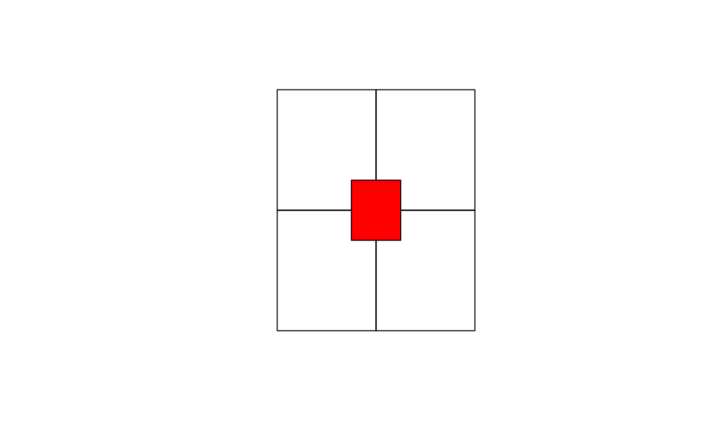
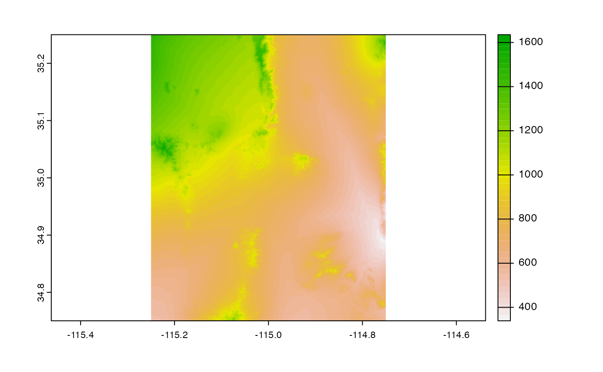

Background
In many cases, users want easy access to a subset of the seamless NED products. From what I have found there are 2 primary programmatic ways to access this data:
Staged Data
There a 3,758 {1-degree x 1-degree} tiles in the 1 and 1/3 arcsec catalogs (e.g. here). The files are named by the upper right hand corner and stored in a nested directory.
This requires users (1) identify the needed tiles (2) download those tiles and (3) crop/mosaic the subsets.
In some cases packages have simplified this logic. One of the best is here. But they are - by nature of the data - generally slow, locked into a single language, and dump a lot of data on a users system.
ESRI Rest/WMS/WFC servics
In other cases, packages have implemented the “Web Services” offered by the National Map. One of the best is here. Again this appraoch comes with a complex backend API, or, a package/language “lock-in”.
Use Case
For demonstration, lets create a random {.5-degree x .5-degree} AOI that intentionally covers 4 1-degree tiles.
Examples
VSI
One alternative (more in line with the Staged data appraoch) is directly using GDALs VSI interface and the index geopackages shared by National Map.
NOTE: The index.gpkg is missing for NED_13
Here we can “virtually” read the index data and filter it by intersection with our AOI. As expected, there are four tiles covered by this AOI:
index <- "/vsicurl/https://prd-tnm.s3.amazonaws.com/StagedProducts/Elevation/1/TIFF/index.gpkg"
(o <- st_filter(read_sf(index), AOI))## Simple feature collection with 4 features and 1 field
## Geometry type: POLYGON
## Dimension: XY
## Bounding box: xmin: -116.0017 ymin: 33.99833 xmax: -113.9983 ymax: 36.00167
## Geodetic CRS: NAD83
## # A tibble: 4 × 2
## location geom
## * <chr> <POLYGON [°]>
## 1 ./n35w115/USGS_1_n35w115.tif ((-115.0017 35.00167, -113.9983 35.00167, -113.9…
## 2 ./n35w116/USGS_1_n35w116.tif ((-116.0017 35.00167, -114.9983 35.00167, -114.9…
## 3 ./n36w115/USGS_1_n36w115.tif ((-115.0017 36.00167, -113.9983 36.00167, -113.9…
## 4 ./n36w116/USGS_1_n36w116.tif ((-116.0017 36.00167, -114.9983 36.00167, -114.9…
The index.gpkg provides the realtive path location which we can expand to HTTP paths:
# Build paths
files <- file.path(
"/vsicurl/https://prd-tnm.s3.amazonaws.com/StagedProducts/Elevation/1/TIFF",
gsub("[.]/", "current/", o$location)
)
# Read each file into a list
tmp <- lapply(files, rast)
# Create and merge a SpatRasterCollection
fin <- merge(sprc(tmp))
# Crop to AOI
elev <- crop(fin, vect(AOI))
# Plot
plot(elev)
We can wrap this up, more cleanly and time it.
system.time({
base_url <- "/vsicurl/https://prd-tnm.s3.amazonaws.com/StagedProducts/Elevation/1/TIFF"
index <- st_filter(read_sf(file.path(base_url, "index.gpkg")), AOI)
tmp <- lapply(file.path(
base_url,
gsub("[.]/", "current/", index$location)
), rast)
elev <- crop(merge(sprc(tmp)), vect(AOI))
})## user system elapsed
## 6.905 5.949 22.268While this appraoch requires no change to your system (expect the addition of a level 13 index gpkg) it requires a fairly nuanced understanding of GDAL/VSI and how the r-spatial packages utilize these. Additionally, its pretty slow even on fast internet.
Local VRT
Given we know all the files, we can build a “Virtual Rater” file (vrt) of the nested staged directory.
In total the VRT is ~2MB and can be accessed directly with any GDAL-backed software.
Effectively this process is using the local file to map to the remote NED files at the metadata level, before extracting data.
This process is more akin to the “services” based approach but is substantially easier to use given it acts as a local file
file <- "../data-raw/ned_1_tester.vrt"
utils:::format.object_size(file.size(file), "auto")## [1] "1.9 Mb"Getting the data …
system.time({
local_vrt <- crop(rast(file), vect(AOI))
})## user system elapsed
## 0.450 0.117 2.492
Langugage Agnostic!
Here we do the “same” thing with command line GDAL (meaning any lanaguge that calls on GDAL can so this )
# Save AOI to gpkg
write_sf(AOI, "aoi.gpkg")
# Crop VRT and generate TIF
system('gdalwarp -cutline aoi.gpkg -crop_to_cutline ../data-raw/ned_1_tester.vrt aoi.tif')
# View
plot(rast('aoi.tif'))
# Unlink
unlink("aoi.tif")Ultimeltly, a local file only helps “me” so ideally this can be made public. So next lets demonstrate some options for doing this that come at a minimal to no cost in performance.
Public VRT
For now, I can also host this vrt file via HTTP using Github and apply the same VSI logic to get data:
system.time({
public_vrt <- crop(
rast("/vsicurl/http://mikejohnson51.github.io/opendap.catalog/ned_1_tester.vrt"),
vect(AOI)
)
})## user system elapsed
## 0.465 0.123 2.418s3 VRT
This approach also moves the NED holdings towards being “cloud-ready” Here I stuck the same file on a private (so example wont work for others) s3 bucket and can access the data in (almost) the same way.
This is cool because a request goes from my computer to the “Lynker” s3 bucket, to the National Map data holdings, back to my computer - all via a single file - and in about 10% of the time needed to work over the National Map files alone.
system.time({
s3_vrt <- crop(
rast("/vsis3/formulations-dev/spatial-grids/ned_1_tester.vrt"),
vect(AOI)
)
})## user system elapsed
## 0.384 0.097 2.184
Ask of National Map Team?
I hope to store these ~2MB VRT files (for levels 1, 2, 13 at minimum) somewhere.
This can either be a public s3 bucket paid for by NOAA through my contract with OWP, or ideally, along side the National Map holdings.
So…
Would you consider adding these VRT files to prd-tnm.s3.amazonaws.com at the same level as the index.gpkg if they were constructed for you?
Thanks!